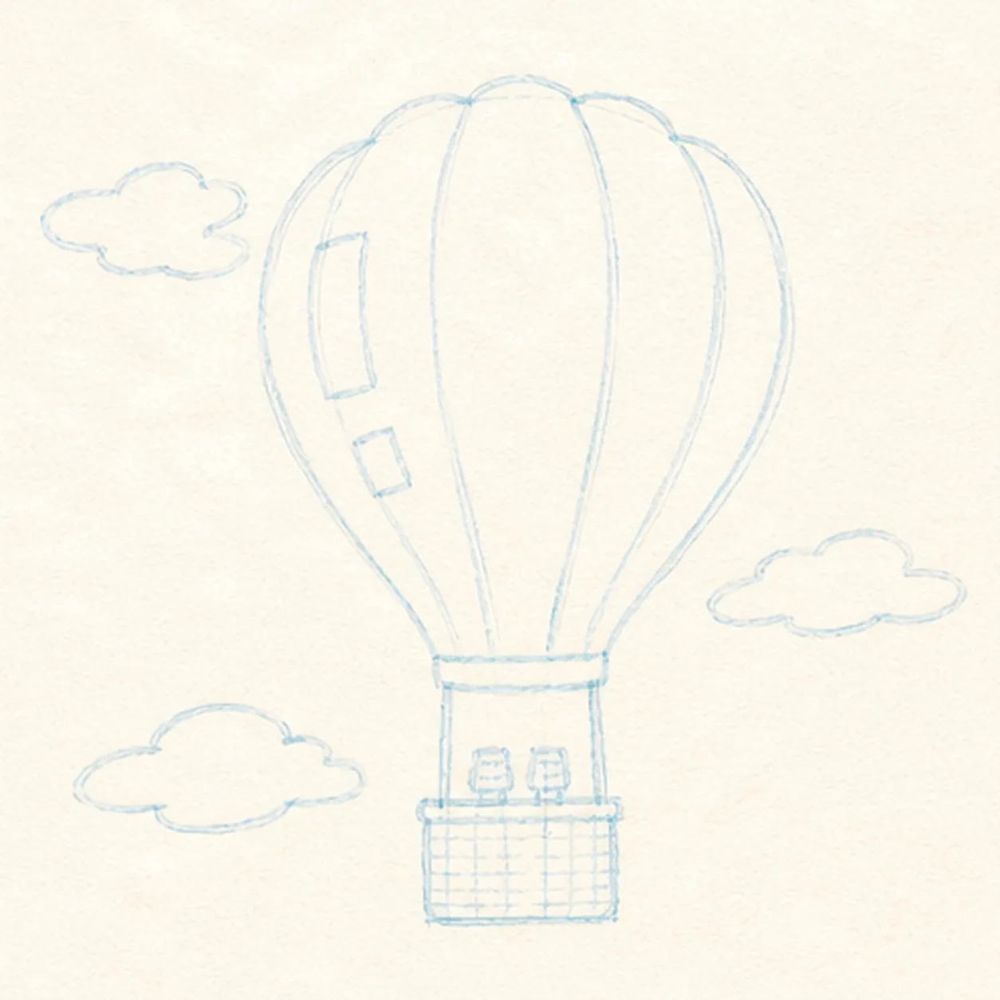
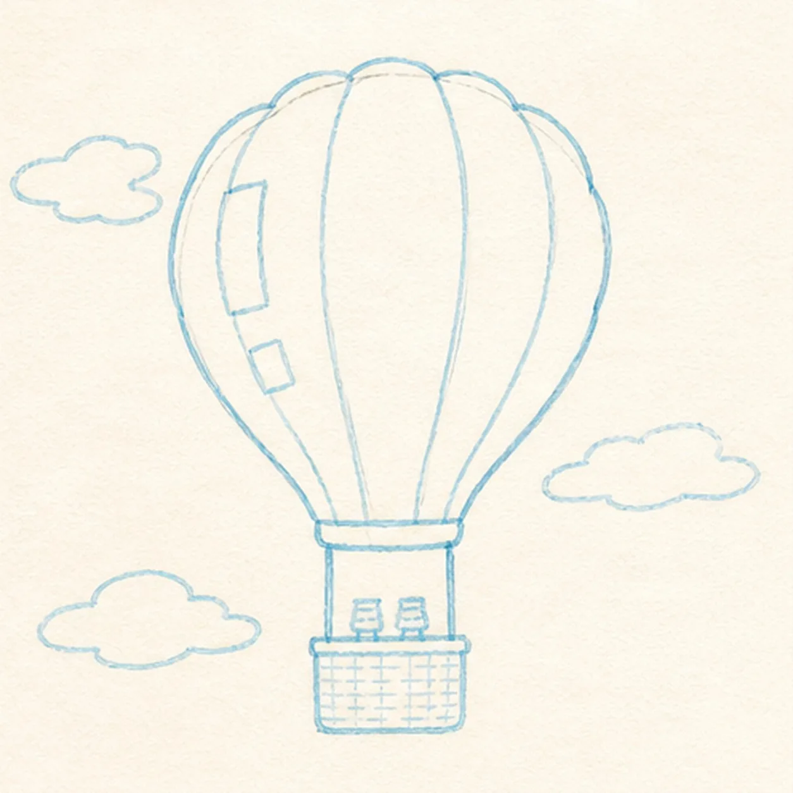
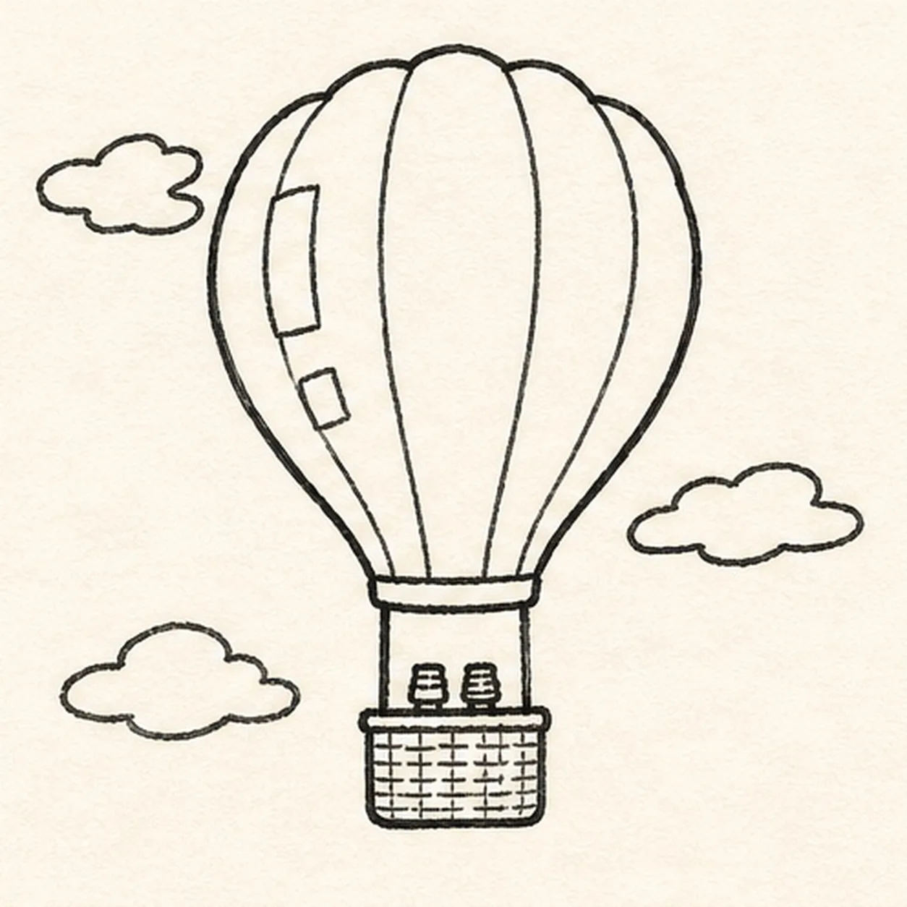
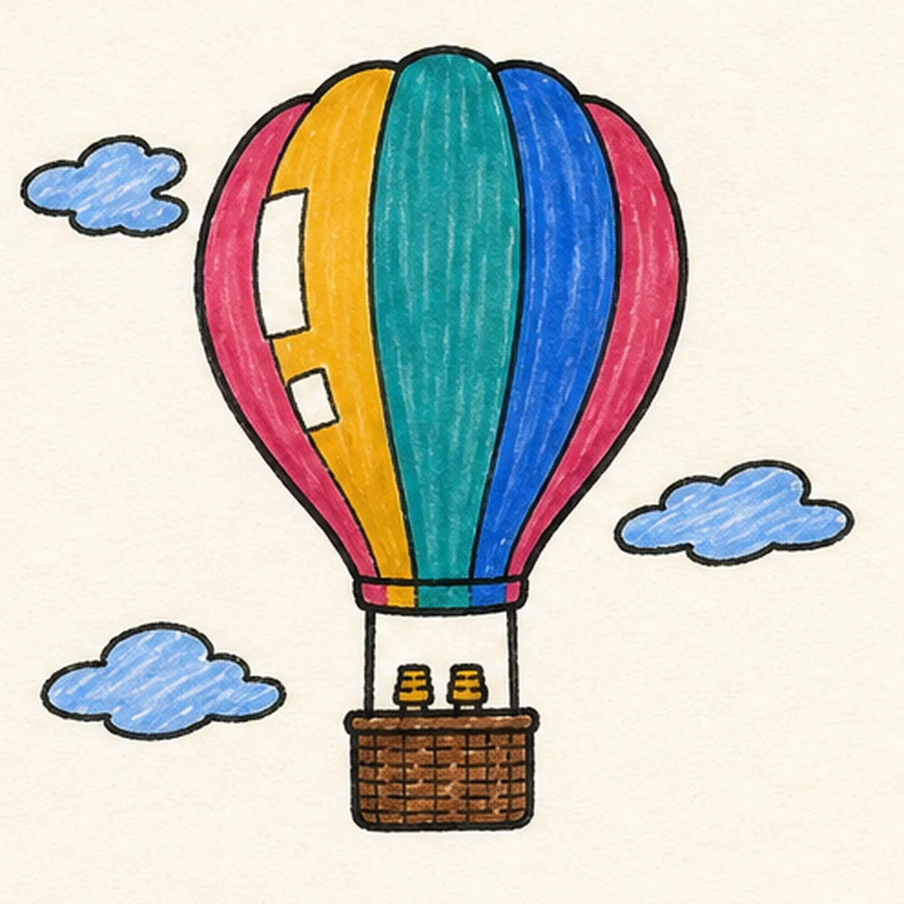

Felt-tip marker mode
Let's draw a hot-air balloon
Treat this as one playful practice round: sketch the idea loosely, simplify the shapes, then commit with confident marker outlines and bright fills.
-
01

Map the balloon flight
Use pale construction to place the broad envelope, exactly four curved seam routes, narrow neck, two suspension ropes, two burners, rectangular basket, two highlight gaps, and exactly three cloud wisps.
Marker tip: Ghost the outside curve twice before touching down, then compare the five band widths around the center line. Reserve the highlight gaps and basket-rim overlap now so later seams and ropes stop cleanly.
-
02

Shape the envelope and basket
Wrap the guides with one gently scalloped balloon envelope, narrow neck, and rectangular basket while preserving every seam, rope, burner, highlight, and cloud route.
Marker tip: Rotate the page for each long envelope side and keep the center band widest. Check the negative space between neck and basket so the burner frame stays tall enough to read.
-
03
Connect the flight details
Clarify exactly four panel seams, two suspension ropes, two burner shapes, two open-paper highlights, and three separate cloud wisps on their reserved routes.
Marker tip: Pull each seam from crown to neck in one confident pass and stop it at the highlight gaps. Keep the clouds uneven and loose, but make sure none touches or crosses the balloon silhouette.
-
04

Ink the floating silhouette
Trace only the established envelope, seams, neck, ropes, burners, basket, highlights, and clouds with thick imperfect black felt-tip, then add short cross-hatching inside the basket.
Marker tip: Ink the small burner and basket details first, let them dry, then rotate the page for the long outside contour. Give the envelope the heaviest line and keep the cloud outlines a little lighter.
-
05

Fill the sky-bright palette
Fill the five established balloon bands raspberry, mustard, teal, cobalt, and raspberry; color the basket warm brown, burners mustard, and three clouds pale blue while preserving both white highlights.
Marker tip: Fill from each black edge toward the center so the marker streaks follow the balloon's vertical lift. Let one area dry before coloring beside it, and leave the visible grain instead of flattening it with too many passes.
-
06

Lift the final marker lines
Thicken selected established black edges, even the existing marker fills, sharpen both highlight gaps, deepen the basket hatching, and erase only pale guides that distract.
Marker tip: Count five color bands, two ropes, two burners, one basket, two highlights, and three clouds before stopping. Change the palette if you like, but keep the face-free flight structure and broad handmade bands clear.
![Handmade face-free felt-tip marker drawing of one plump raspberry-and-coral heart tilted slightly clockwise with one teal adhesive bandage crossing diagonally from lower left to upper right, one warm-yellow center pad, two rounded adhesive ends with exactly four open-paper ventilation dots total, two open-paper oval heart highlights, exactly two small warm-yellow sparkle accents, thick imperfect black outlines, visible marker streaks, a few pale construction traces, and one broken deep-navy shadow](../assets/heart-with-a-bandage-finished-v1.webp)
![Handmade face-free felt-tip marker drawing of one open book in a shallow three-quarter view with exactly two blank page blocks, one black V-shaped center gutter, one coral ribbon bookmark hanging from the gutter, one small curled outer corner on each page, exactly three stacked warm-yellow lower page-edge bands per side, raspberry marker fill across the left page and cover plane, teal marker fill across the right page and cover plane, small open-paper cover-edge highlights, thick imperfect black outlines, visible marker streaks, restrained edge hatching, and one broken deep-navy shadow](../assets/open-book-with-ribbon-bookmark-finished-v1.webp)
![Handmade face-free felt-tip marker drawing of one diagonal pickleball paddle with one thick oval face divided into raspberry, teal, and mustard color blocks by exactly two diagonal routes, one doubled black rim, one short neck, one coral handle with exactly three curved grip bands and a small end cap, one mustard pickleball at upper right with exactly seven visible open holes, two black paddle-swing arcs, exactly three black ball-speed dashes, two open-paper oval highlights on the paddle face, thick imperfect black outlines, visible marker streaks, and one broken deep-navy shadow beneath the handle](../assets/pickleball-paddle-and-ball-in-motion-finished-v1.webp)